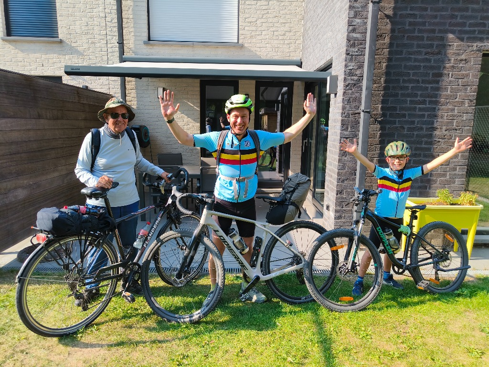

Vic en Ward trekken er samen met de papa van Ward (vake) soms met de fiets op uit voor een bijzondere bedevaart. Met drie generaties op de trappers combineren we onze liefde voor het fietsen met verdieping en dankbaarheid in ons geloof.
Tijdens deze tochten fietsen we naar belangrijke plaatsen voor ons katholiek geloof, zoals Gistel of Scherpenheuvel. Dat zijn telkens flinke ritten van 90 tot 120 km enkel!

90 tot 120 km trappen naar bijzondere geloofsplekken
Samen onderweg zijn met drie generaties maakt elke bedevaart tot een onvergetelijk avontuur. De tochten brengen ons langs prachtige wegen naar plekken met een rijke katholieke traditie en betekenis, zoals de Sint-Godelieveabdij in Gistel en de basiliek van Onze-Lieve-Vrouw van Scherpenheuvel.
Met afstanden van 90 tot 120 km enkele rit is het telkens een mooie sportieve uitdaging, waarin doorzettingsvermogen, samen bidden, humor onderweg en een kaarsje branden bij aankomst hand in hand gaan.
Op onze laatste bedevaart leerden we ook een nieuw en bijzonder goed doel kennen: Levensadem.
Dit mooie initiatief raakte ons onderweg en zetten we hier dan ook heel graag mee in de kijker. Neem zeker een kijkje op hun website om te ontdekken waar zij voor staan en hoe ze mensen ondersteunen.